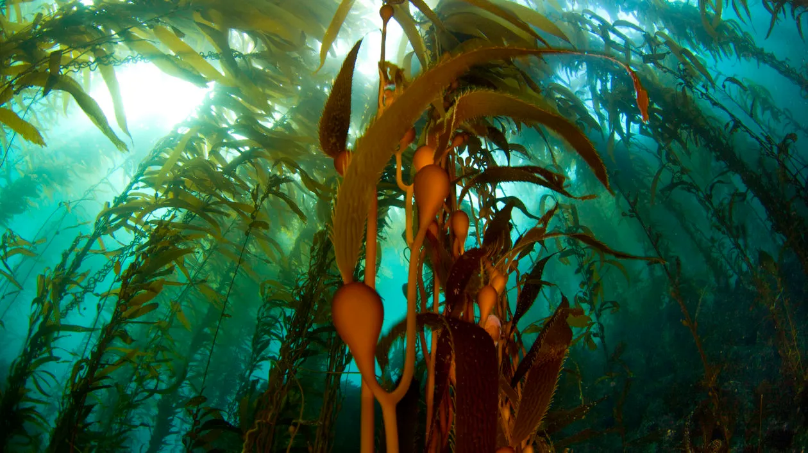
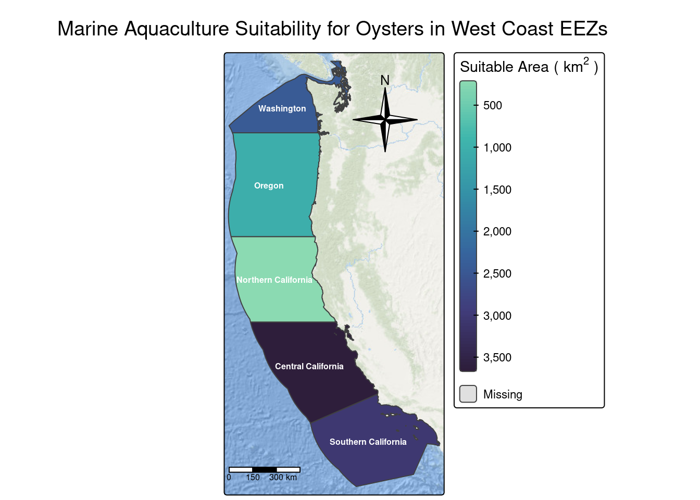
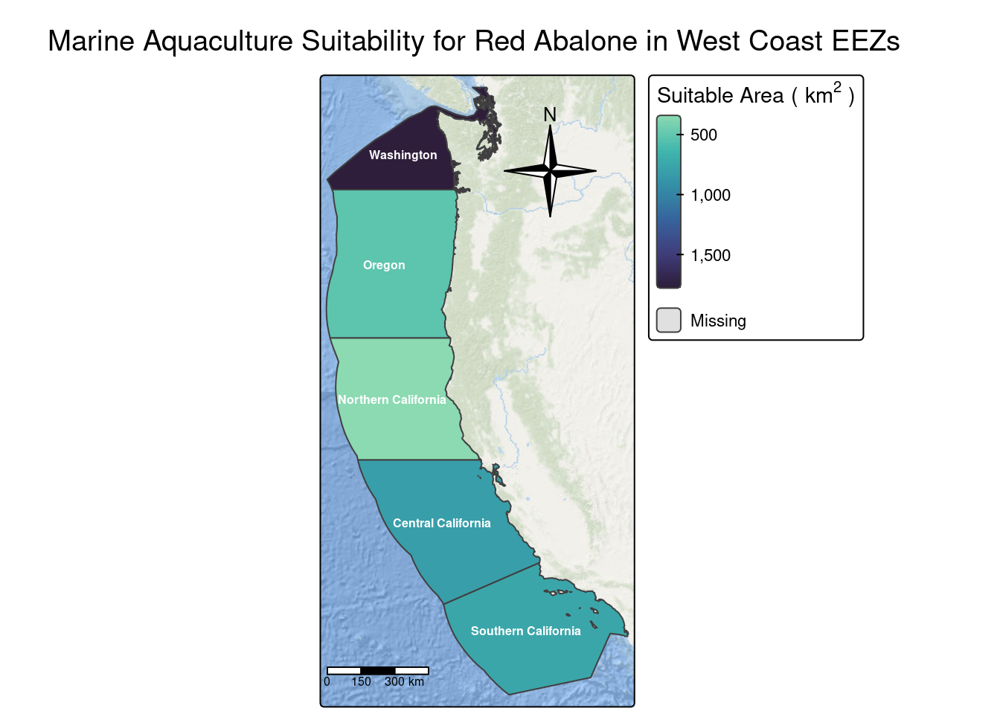

There is a growing global need to sustainably feed expanding human populations, and one promising solution is marine aquaculture. Aquaculture is defined as the organized cultivation, feeding, propagation, and production of aquatic organisms for commercial, recreational, or public use (Alleway et al., 2018). The aquaculture industry has significant potential to support food security while also contributing to conservation and economic development. In California, aquaculture is highly diverse in its production systems, cultured species, and final products, accounting for approximately 6% of the total value of the U.S. aquaculture industry (Wright et al., 2025). Wright et al. identify four main sectors within California aquaculture: finfish, shellfish, algae, and natural resource agencies. Finfish and shellfish production together represent more than 70% of the industry’s total value and primarily supply food for human consumption (Wright et al., 2025). As a result, commercial aquaculture has become an increasingly important and profitable source of marine food production in California.

Figure 1. Kelp forest pictured in Channel Islands National Park (The Nature Conservancy).
Oysters and the critically endangered red abalone are two commercially significant species in California aquaculture. Oysters represent the largest share of mollusk aquaculture production in the state, followed by abalone, mussels, and marine clams, which together comprise the remainder of California’s mollusk industry output (Wright et al., 2025). Although oysters are relatively sturdy animals, they are sensitive to environmental conditions and are typically confined to sea surface temperatures (SSTs) between 11-30°C and water depths ranging from 0-70 meters below sea level (Oliver, 2025). The critically endangered red abalone (Haliotis rufescens), a marine gastropod, thrives in cooler SSTs of 8-18°C and is generally limited to depths of 0-25 meters below sea level (SeaBase, n.d.).
Both oysters and red abalone are known to inhabit waters along the U.S. West Coast. The West Coast includes multiple Exclusive Economic Zones (EEZs), ocean areas extending roughly 230 miles beyond a nation’s territorial sea and where a coastal nation has jurisdiction over both biotic and abiotic resources (NOAA, 2023). As such, identifying regions where their suitable environmental ranges overlap within Exclusive Economic Zones (EEZs) may help evaluate potential areas for sustainable and profitable aquaculture development.
The purpose of this blog post is to evaluate the suitability of West Coast Exclusive Economic Zones (EEZs) for developing marine aquaculture for multiple oyster species and the red abalone. Suitable locations are identified using species-specific ranges of sea surface temperature (SST) and ocean depth. This project utilizes GIS applications such as working with vector and raster data, raster resampling, masking, and map algebra to analyze environmental conditions. The analysis includes two main components: (1) creating a final map of suitable oyster aquaculture areas, and (2) building a function that allows users to generate suitability maps by EEZ based on selected species, temperature ranges, and depth limits. The following research question was utilized to facilitate the analysis:
How do changes in species-specific temperature and depth thresholds affect the identification of suitable aquaculture areas within West Coast Exclusive Economic Zones (EEZs) for commercially significant marine species?
Data Description
The Bren School of Environmental Science and Management at the University of California, Santa Barbara provided essential support for this project, including access to data resources, documentation, and technical guidance.
SeaLifeBase is a publicly available online database that provides information on a wide range of marine species based on criteria such as commercial importance and taxonomic group. Each species profile includes details on depth range, temperature preference, geographic distribution, life history, and classification. The database is open access and does not require any downloads to use.
For this analysis, West Coast Exclusive Economic Zone (EEZ) boundaries were obtained from Marineregions.org to define maritime boundaries. The General Bathymetric Chart of the Oceans (GEBCO) is a global terrain model that provides geospatial information, such as elevation, for both ocean and land surfaces at a 15-arc-second grid resolution (GEBCO, n.d.). Bathymetry data for this analysis were downloaded from GEBCO as a tif file. This analysis also used satellite-derived average sea surface temperature (SST) data from 2008–2012 to characterize mean SST within each EEZ. Although the GeoTIFF files were provided through course materials, the original data are publicly available from NOAA’s 5 km Daily Global Satellite Sea Surface Temperature Anomaly v3.1 product.
Part 1: Map of Suitable Locations for Oyster Aquaculture
Data Preparation
Before beginning my analysis, I loaded the appropriate packages to properly read, manipulate, and work with geospatial data in formats such as sf, SpatRaster, and SpatVector. I used the vect() function to read in the West Coast EEZ shapefile as a vector layer. I imported the bathymetry dataset using the rast() function and stored it as a SpatRaster object. For the sea surface temperature (SST) data, I identified all .tif files using list.files() and combined them into a single raster stack with rast() for further analysis. I also included a conditional check that stops the code if character(0) is returned, indicating that no raster files were found in the directory and that an absolute file path should be specified.
Code
# Import packageslibrary(here) # Load "here" to locate and reference fileslibrary(tidyverse) # Load the tidyverse" for data cleaninglibrary(sf) # Load "sf" for GIS analysislibrary(raster) # Load "raster" for accessing raster data typeslibrary(ggplot2) # Load "ggplot2" for data visualizationlibrary(tmap) # Load "tmap" for functions to create and layer mapslibrary(kableExtra) # Load "kableExtra" for table formattinglibrary(stars) # Load "stars" for integration with "sf"library(terra) # Load "terra" for SpatVector and SpatRaster operations# knitr::opts_knit$set(root.dir = here::here("posts", "aquaculture-post"))# getwd()
Code
# West Coast EEZeez <-vect(here::here("data", "wc_regions_clean.shp"))# Bathymetry rasterdepth <-rast(here::here("data", "depth.tif"))
Code
# Create a list of the tiff files for SSTsst_files <-list.files( # Define file pathpath = here::here("data"),# Pattern matches all tiff files starting with "average_annual"pattern ="average_annual.*\\.tif$",full.names = T )# Stop running if character(0) returnedif (length(sst_files) ==0) {stop("No SST raster files found in directory.")}# Stack raster filessst <-rast(sst_files)
It is critical to ensure that the coordinate reference system (CRS) of all geospatial objects match to avoid misalignment, inaccurate measurements, and errors during spatial analysis. Here, I used conditional statements with st_crs() to detect and resolve any CRS mismatches between spatial objects and to display a message when mismatches were found.
Code
# Create list of spatial objectsspatial_objects <-list(eez, depth, sst)# Use eez's CRS as referenceref_crs <-st_crs(spatial_objects$eez)# Check and transform each tile with if/else statementsif (st_crs(spatial_objects$depth) != ref_crs) {warning("depth CRS does not match. Transforming to match eez CRS.") spatial_objects$depth <-st_transform(spatial_objects$depth, ref_crs)} else {message("depth CRS already matches eez CRS.")}## depth CRS already matches eez CRS.if (st_crs(spatial_objects$sst) != ref_crs) {warning("sst CRS does not match. Transforming to match eez CRS.") spatial_objects$sst <-st_transform(spatial_objects$sst, ref_crs)} else {message("sst CRS already matches eez CRS.")}## sst CRS already matches eez CRS.
Data Processing
Before combining the SST and depth data, it was necessary to conduct several preprocessing steps to ensure accurate spatial alignment and analysis. I first projected the depth dataset to match the SST CRS to ensure proper spatial alignment. Then, I created a single raster representing average SST from 2008–2012 using the mean() function and converted the average temperature from Kelvin to Celsius by globally subtracting 273.15 K from all raster values. To prepare the datasets for analysis, I ensured both rasters matched in terms of a shared CRS, resolution, and extent. Then, I cropped and resampled (resample()) the depth raster to the SST boundary to match the resolution of the average SST raster using the nearest neighbor method.
Code
# Reproject to match sst CRSdepth <-project(depth, sst)# Calculate average SST among all rastersavg_sst <-mean(sst)# Update avg_sst in degrees Celsiusavg_sst <- avg_sst -273.15# Do the CRS match?message("Do the CRS match:", crs(avg_sst) ==crs(depth))## Do the CRS match:TRUE# Do the resolutions match (require resampling)? message("Do the resolutions match:", res(avg_sst) ==res(depth))## Do the resolutions match:TRUETRUE# Do the extents match?message("Do the extents match: ", ext(avg_sst) ==ext(depth))## Do the extents match: TRUE
Code
# Use crop() to crop depth to the extent of avg_sstdepth_sst_crop <-crop(depth, avg_sst)# Resample with nearest neighbor methoddepth_sst_crop <-resample(depth_sst_crop, avg_sst, method ="near")
Finding Suitable Locations
To identify suitable aquaculture locations, I reclassified the average SST and depth rasters using oyster-specific temperature and depth thresholds in classify(), where suitable values were assigned a value of 1 and unsuitable values a value of 0. I then defined a function to combine both layers by multiplying the reclassified rasters to identify areas that met both environmental requirements. Finally, I stacked the reclassified SST and depth layers using lapp() and applied the function to generate a single binary raster showing overall suitability. The output raster avg_sst_depth is a SpatRaster with binary values of 0 and 1.
Code
# Preferred oyster range for SST: 11-30°C# Define reclass matrix for un/suitable SSTreclass_matrix_sst <-matrix(c(-Inf, 11, 0, # Negative infinity (unbounded) to 11 degrees assigned 011, 30, 1, # 11-30 degrees assigned 130, Inf, 0), # 30 to infinity (unbounded) assigned 0ncol =3, # Create three columnsbyrow = T # Fill by row )# Assign reclassified values to avg_sstavg_sst_reclass <-classify(avg_sst, rcl = reclass_matrix_sst)
Code
# Preferred oyster range for depth: 0-70 meters below sea level# Define reclass matrix for un/suitable depthreclass_matrix_depth <-matrix(c(-Inf, -70, 0, # -70 used for values below sea level-70, 0, 1, # Suitable values assigned 1 for -70-00, Inf, 0), # > 0 assigned unsuitable (0)ncol =3,# Create three columnsbyrow = T # Fill by row )# Assign reclassified values to depthdepth_reclass <-classify(depth_sst_crop, rcl = reclass_matrix_depth)
Code
# Create multiplication function to reference in lappmultiply <-function(x,y){ multi_raster <- x*y # Raster multiplication across all cellsreturn(multi_raster) }# Return suitable (1) and unsuitable (0) cells avg_sst_depth <-lapp(x =c(avg_sst_reclass,depth_reclass), # Stack rastersfun = multiply) # Apply multiplication function # Print binary raster avg_sst_depth
class : SpatRaster
size : 480, 408, 1 (nrow, ncol, nlyr)
resolution : 0.04166185, 0.04165702 (x, y)
extent : -131.9848, -114.9867, 29.99305, 49.98842 (xmin, xmax, ymin, ymax)
coord. ref. : lon/lat WGS 84
source(s) : memory
name : lyr1
min value : 0
max value : 1
Determining the Most Suitable EEZ
In order to rank EEZ zones by aquaculture potential, it was important to determine the total suitable area within each EEZ. I calculated the total suitable area within each zone, then projected the EEZ shapefile to match the CRS of the suitability raster (avg_sst_depth). I then utilized the ifel() function to identify suitable cells within the EEZs by reclassifying values of 0 as NA (unsuitable) and converting all remaining values to 1 (suitable), allowing only viable areas to be included in the following calculations.
Next, I calculated the total suitable aquaculture area (km²) within each EEZ by masking, calculating cell area, and summarizing suitability by region. It was necessary to rasterize the eezSpatVector because vector EEZ polygons must be represented in raster space to allow area summarization per region using raster-based functions. I utilized rasterize() to convert the EEZ polygons so that each raster cell was labeled by region, enabling area calculations with zonal statistics. Additionally, I created a mask to include only raster values within the EEZ regions, excluding any areas outside these boundaries. The resulting raster contained the surface area of each cell, calculated using cellSize(). Finally, I used zonal() to sum the area of suitable cells for each EEZ and joined the results back to the spatial reference dataset (eez_sf) to visualize the distribution of suitable aquaculture areas using tmap.
Code
# Rasterize eez regionseez_rast <-rasterize(eez, avg_sst_depth_suitable, field ="rgn") # By region# Identify suitable cells in mask suitable_cells_eez <-mask(avg_sst_depth_suitable, eez)# Calculate cell areas (km^2)cell_area <-cellSize(suitable_cells_eez, unit ="km")# Convert to sf objecteez_sf <-st_as_sf(eez) # To have geometryarea_eez <-zonal(cell_area * suitable_cells_eez, # Identify area of suitable locations eez_rast, # Rasterized eezfun ="sum", na.rm = T) %>%# Sum areas of cells within each EEZ zone rename(suitable_area_km2 = area) %>%# Rename for naming conventionsas.data.frame() %>%# Convert to data frameleft_join(eez_sf, by ="rgn") # Join on region# Convert back into sf so eez data (includes calculated suitable area) for mappingarea_eez <- area_eez %>%st_as_sf()
Code
# Create mapoyster_pref_map <-tm_shape(area_eez) +tm_polygons("suitable_area_km2", # Color by suitable_area_km2 variablepalette ="-mako", # Reverse blue scalestyle ="cont", # Continuous scale (styles referenced:#https://r-tmap.github.io/tmap-book/visual-variables.html)title =expression("Suitable Area"~"("~ km^2~")") # Rename legend title ) +tm_text("rgn", # Label by regionsize = .5, # Adjust sizecol ="white", # Adjust text colorfontface ="bold", # Labels are boldedxmod =-.5) +# Adjust .5 from the lefttm_layout( # Center title outside bounding boxmain.title ="Marine Aquaculture Suitability for Oysters in West Coast EEZs",main.title.size =1.2, # Adjust title sizelegend.outside =TRUE, # Place legend outside map framelegend.outside.position ="right", # Place legend to rightcomponent.autoscale =FALSE, # Disable autoscaling for titleouter.margins =c(0.01, 0.25, 0.01, 0.05) # Manually adjust map frame ) +tm_scale_bar( # Add scale bar for scaleposition =c(-.01, 0.08), # Move 1% from left and 8% from bottom breaks =seq(0, 500, 150)) +# Establish scale bar rangestm_compass( # Add compass for orientationtype ="4star", position =c("right", "top")) +# Adjust positiontm_basemap("Esri.OceanBasemap") # Ocean basemap# Print mapoyster_pref_map

Map 1. Suitable aquaculture areas within West Coast EEZs for oysters.
The suitable area for oyster harvesting relative to the total area of each EEZ region was also examined. I created a table using kableExtra to display both the total suitable area and the proportion of each EEZ that is suitable for oyster aquaculture, allowing for comparisons across regions independent of EEZ size.
Code
# Table with kableextra for prop of suitable areas to EEZ areaarea_eez %>% st_drop_geometry %>%# Drop geometry dplyr::select(region = rgn, # Select region suitable_area_km2, # Select suitable areatotal_area_km2 = area_km2 # Rename to total_area ) %>%# Update suitable_area to be rounded to nearest hundrethmutate(suitable_area_km2 =round(suitable_area_km2, 2), # Create new variable for prop of suitable area to total EEZ areapercent_suitable =round((suitable_area_km2 / total_area_km2) *100, 1)) %>%# Round to nearest tenth dplyr::select(-total_area_km2) %>%# Deselect total_area# Rename columnsrename("Region"= region,"Suitable Area (km^2)"= suitable_area_km2, "Proportion of Suitable Area in EEZ"= percent_suitable ) %>%# Enable titlekable(caption ="Amount of Suitable Areas by EEZ for Oyster Preferences") %>%# Allow table to be striped with highlight optionkable_styling(bootstrap_options =c("striped", "hover"),full_width =FALSE, # Disable full width position ="center") # Center labels
Amount of Suitable Areas by EEZ for Oyster Preferences
Region
Suitable Area (km^2)
Proportion of Suitable Area in EEZ
Central California
3656.82
1.8
Northern California
194.13
0.1
Oregon
1028.90
0.6
Southern California
3062.20
1.5
Washington
2435.93
3.6
Part 2: Generalized Function of Aquaculture for Species Preferences
The workflow observed in Part 1 is applicable to any species of interest to generate maps of suitable aquaculture areas within West Coast EEZs based on species-specific temperature and depth ranges. To make this process reproducible, I created the species_preference function to streamline identification of suitable zones for any species. The function takes minimum and maximum SST values, minimum and maximum depth limits, and a species name as inputs, and returns a map of EEZ regions shaded by total suitable area.
It is important to note that species_preference performs calculations only based on the specific inputs provided, such as reclassification and average SST conversion. Therefore, I reloaded all spatial objects and verified that they shared the same CRS to ensure they were correctly prepared for processing within the function.
Code
# Load in data again# West Coast EEZeez <-vect(here::here("data", "wc_regions_clean.shp"))# Bathymetry rasterdepth <-rast(here::here("data", "depth.tif"))# Create a list of the tiff files for SSTsst_files <-list.files( # Define file pathpath = here::here("data"),# Pattern matches all tiff files starting with "average_annual"pattern ="average_annual.*\\.tif$",full.names = T )# Stop running if character(0) returnedif (length(sst_files) ==0) {stop("No SST raster files found in directory.")}# Stack raster filessst <-rast(sst_files)# Create list of spatial objectsspatial_objects <-list(eez, depth, sst)# Use eez's CRS as referenceref_crs <-st_crs(spatial_objects$eez)# Check and transform each tile with if/else statementsif (st_crs(spatial_objects$depth) != ref_crs) {warning("depth CRS does not match. Transforming to match eez CRS.") spatial_objects$depth <-st_transform(spatial_objects$depth, ref_crs)} else {message("depth CRS already matches eez CRS.")}# Check and transform each tile with if/else statementsif (st_crs(spatial_objects$sst) != ref_crs) {warning("sst CRS does not match. Transforming to match eez CRS.") spatial_objects$sst <-st_transform(spatial_objects$sst, ref_crs)} else {message("sst CRS already matches eez CRS.")}
I also redefined the multiply function to support raster multiplication within the species_preference function when used with lapp().
Code
# Define multiply function for global raster multiplicationmultiply <-function(x,y){ multi_raster <- x*yreturn(multi_raster) }
The following code cells demonstrate the integrated workflow used in the species_preference function to generate a map of suitable aquaculture areas within West Coast EEZs based on species-specific SST and depth parameters. I applied the function using the temperature and depth ranges for red abalone to produce a map analogous to the one for suitable oyster aquaculture areas.
Code
# This function takes arguments:# minimum and maximum sea surface temperature# minimum and maximum depth# species namespecies_preference <-function(min_temp, max_temp, min_depth, max_depth, species_name){ ### Assume files have been loaded in already with matching CRS checks###____________________________________________________________### Data processing# Reproject to match sst CRSdepth <-project(depth, sst)# Calculate average SST among all rastersavg_sst <-mean(sst)# Update avg_sst in degrees Celsiusavg_sst <- avg_sst -273.15# Use crop() to crop depth to the extent of avg_sstdepth_sst_crop <-crop(depth, avg_sst)# Resample with nearest neighbor methoddepth_sst_crop <-resample(depth_sst_crop, avg_sst, method ="near")###____________________________________________________________### Find suitable locations# Define reclass matrix for un/suitable SSTreclass_matrix_sst <-matrix(c(-Inf, min_temp, 0, # Negative infinity (unbounded) to min_temp min_temp, max_temp, 1, # min-max temp assigned 1 max_temp, Inf, 0), # max_temp to infinity (unbounded) assigned 0ncol =3, # Create three columnsbyrow = T # Fill by row )# Assign reclassified values to avg_sstavg_sst_reclass <-classify(avg_sst, rcl = reclass_matrix_sst)# Define reclass matrix for un/suitable depthreclass_matrix_depth <-matrix(c(-Inf, min_depth, 0, # Negative infinity (unbounded) to min_temp (below sea level) min_depth, max_depth, 1, # min-max depth assigned 1 max_depth, Inf, 0), # > max_depth assigned unsuitable (0)ncol =3,# Create three columnsbyrow = T # Fill by row )# Assign reclassified values to depthdepth_reclass <-classify(depth_sst_crop, rcl = reclass_matrix_depth)# Return suitable (1) and unsuitable (0) cells avg_sst_depth <-lapp(x =c(avg_sst_reclass,depth_reclass), # Stack rastersfun = multiply) # Apply multiplication function ###____________________________________________________________### Determine most suitable locations within EEZs# Projecteez <-project(eez, avg_sst_depth)# Select suitable areasavg_sst_depth_suitable <-ifel(avg_sst_depth ==0, NA, # Replace with NA1) # Otherwise assign "1"# Rasterize eez regionseez_rast <-rasterize(eez, avg_sst_depth_suitable, field ="rgn") # By region# Identify suitable cells in mask suitable_cells_eez <-mask(avg_sst_depth_suitable, eez)# Calculate cell areas (km^2)cell_area <-cellSize(suitable_cells_eez, unit ="km")# Convert to sf objecteez_sf <-st_as_sf(eez) # To have geometryarea_eez <-zonal(cell_area * suitable_cells_eez, # Identify area of suitable locations eez_rast, # Rasterized eezfun ="sum", na.rm = T) %>%# Sum areas of cells within each EEZ zone rename(suitable_area_km2 = area) %>%# Rename for naming conventionsas.data.frame() %>%# Convert to data frameleft_join(eez_sf, by ="rgn") # Join on region# Convert back into sf so eez data (includes calculated suitable area) for mappingarea_eez <- area_eez %>%st_as_sf()###____________________________________________________________### Create map of suitable areas within EEZstm_shape(area_eez) +tm_polygons("suitable_area_km2", # Color by suitable_area_km2 variablepalette ="-mako", # Reverse blue scalestyle ="cont", # Continuous scale title =expression("Suitable Area"~"("~ km^2~")") #Rename legend title ) +tm_text("rgn", # Label by regionsize = .5, # Adjust sizecol ="white", # Adjust text colorfontface ="bold", # Labels are boldedxmod =-.5) +# Adjust .5 from the lefttm_layout( # Center title outside bounding boxmain.title =paste("Marine Aquaculture Suitability for", species_name, # Include species name in title"in West Coast EEZs"),main.title.size =1.2, # Adjust title sizelegend.outside =TRUE, # Place legend outside map framelegend.outside.position ="right", # Place legend to rightcomponent.autoscale =FALSE, # Disable autoscaling for titleouter.margins =c(0.01, 0.25, 0.01, 0.05) # Manually adjust map frame ) +tm_scale_bar( # Add scale bar for scaleposition =c(-.01, 0.08), # Move 1% from left and 8% from bottom breaks =seq(0, 500, 150)) +# Establish scale bar rangestm_compass( # Add compass for orientationtype ="4star", position =c("right", "top")) +# Adjust positiontm_basemap("Esri.OceanBasemap") # Ocean basemap}# Output:# Map of EEZ regions colored by amount of suitable area
Code
# Call function for Red Abalone and preferred temp/depth rangespecies_pref_map <-species_preference(min_temp =8, max_temp =18, min_depth =-25, max_depth =0, species_name ="Red Abalone")# Print map species_pref_map

Map 2. Suitable aquaculture areas within West Coast EEZs for red abalone.
Reflection
For oysters species along the West Coast, Central California is the most suitable EEZ with about 3,656.82 km2 of suitable area while Northern California is the least suitable EEZ with about 194.13 km2 of suitable area. Central California likely offers the most favorable SST and depth conditions for oyster cultivation. Notably, the Washington EEZ has a larger suitable area (1,028.90 km²) than Northern California despite its colder location, indicating a higher proportion of habitat appropriate for mollusk aquaculture. Central and Southern California also show relatively high suitability. Oregon’s EEZ contains substantial suitable area as well, though less than most other regions.
The red abalone, a critically endangered marine gastropod, is a commercially valuable species with strong potential for aquaculture. The Washington EEZ appears especially promising for red abalone cultivation, with more than 1,500 km² of suitable area, likely due to the colder water temperatures preferred by the species. Interestingly, Central and Southern California also contain substantial suitable areas that exceed those of Northern California, despite being further south and having generally warmer conditions; differences in coastal upwelling and nutrient availability may explain this pattern. Red abalone aquaculture also represents a model for sustainable seafood production. For instance, the Monterrey Abalone Company in Central California raises abalone in both marine and land-based systems with minimal use of chemicals and antibiotics (Bailey, 2015). Overall, red abalone farms highlight opportunities for environmentally responsible aquaculture while supporting production in the most suitable West Coast EEZs, particularly in Washington, Central California, and Northern California.
Several considerations exist for future analysis. The analysis considers the average annual SST and depth, but does not account for seasonal variation that may influence species suitability. Additionally, the species_preference function considers only temperature and depth ranges; other ecological or biological factors (ex. salinity and predation) are not included and are thus simplified. The accruacy of the EEZ polygons are important as they affect results. For example, misaligned or outdated boundaries could mislead researchers into incorrect area calculations. Therefore, an improved analysis would incorporate flexibility for complex species preferences to avoid oversimplification and ensure that geospatial objects are properly aligned, yielding more accurate results.
References
[1] Alleway, H. K., Gillies, C. L., Bishop, M. J., Gentry, R. R., Theuerkauf, S. J., & Jones, R. (2018). The ecosystem services of marine aquaculture: Valuing benefits to people and nature. BioScience, 69(1), 59–68. https://doi.org/10.1093/biosci/biy137
[10] Wright, A., Moody, C., & Gross, J. (2025). Composition of California’s aquaculture industry and surveying its disease challenges and management strategies. Aquaculture Reports, 42, 102799. Retrieved November 29, 2025, from https://doi.org/10.1016/j.aqrep.2025.102799